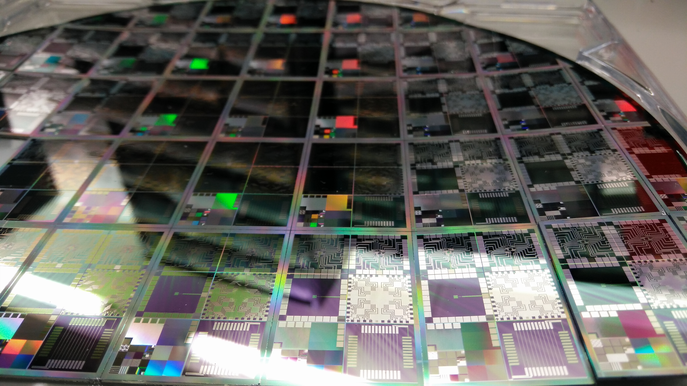

Pax Silica vs WAICO: Kazakhstan Is in Both AI Blocs, Uzbekistan Has Applied
Kazakhstan joined the US-led Pax Silica initiative on 25 June and China's WAICO on 16 July. Reuters reported that Washington is preparing to ask dozens of countries to choose.

Central Asian states find themselves between two rival international structures on artificial intelligence: the US-led Pax Silica and the China-founded WAICO. Kazakhstan is so far the only known country belonging to both.
What is Pax Silica?
Pax Silica was launched by Washington in December 2025. It covers the supply chains and physical infrastructure underpinning the AI economy: critical minerals, semiconductors, energy, data centres and computing capacity.
According to RFE/RL, 25 countries have signed on. The Times of Central Asia notes separately that 35 countries signed the US AI Opportunity Statement.
When Kazakhstan joined
Kazakhstan formally joined Pax Silica on 25 June 2026, the first Central Asian country to do so. The accession declaration was signed in Washington by Deputy Prime Minister and Minister of Artificial Intelligence and Digital Development Zhaslan Madiyev.
What is WAICO?
The World Artificial Intelligence Cooperation Organization (WAICO) was established on 16 July 2026, when 29 countries signed the founding agreement in Shanghai on the eve of the World Artificial Intelligence Conference. It is headquartered in Shanghai.
The body was first proposed by Chinese Premier Li Qiang in July 2025. RFE/RL lists members including China, Russia, Kazakhstan, Uzbekistan, Kyrgyzstan, Tajikistan, Pakistan, Indonesia and Brazil.
By the numbers
- Pax Silica launched: December 2025
- Pax Silica signatories: 25 countries
- Kazakhstan joined Pax Silica: 25 June 2026
- WAICO founded: 16 July 2026, Shanghai
- WAICO founding members: 29 countries
- US AI Opportunity Statement: 35 countries
- Known countries in both: 1 — Kazakhstan
Pressure from Washington
Reuters reported that the US government was preparing to tell dozens of countries they must choose between the competing AI initiatives. A draft State Department letter reviewed by the agency warned that countries joining the rival framework could be excluded from the US-led coalition.
To be part of everything is to be part of nothing.
— From the draft US State Department letter reviewed by Reuters (August 2026)
RFE/RL reported that the letter had not been sent at the time of publication. The US Special Envoy for South and Central Asia is Sergio Gor.
Kazakhstan's position
President Kassym-Jomart Tokayev attended the Shanghai conference. RFE/RL quotes him as follows.
Our approaches are in line with China's position on this issue.
— Kassym-Jomart Tokayev, President of Kazakhstan (RFE/RL, 2026)
The American side is moving away from open source, and there will be problems with technology sharing.
— Zamir Karazhanov, political scientist, director of the Kemel Arna Public Foundation (The Times of Central Asia, September 2026)
Kazakhstan also does not want AI to be used as an instrument of politics, and on this point, we agree with China.
— Zamir Karazhanov, political scientist, director of the Kemel Arna Public Foundation (The Times of Central Asia, September 2026)
What Uzbekistan is doing
In late August, Uzbekistan's ambassador to the United States, Furqat Sidikov, told journalists that Tashkent had requested to join Pax Silica. According to RFE/RL, Uzbekistan is currently a WAICO member.
Expert assessments
I don't think Astana made a mistake by joining both blocs.
— Wilder Alejandro Sanchez, President of Second Floor Strategies (RFE/RL, September 2026)
Ken Moriyasu, a senior fellow at the Hudson Institute, argued that keeping Kazakhstan a trusted ally and partner matters more.